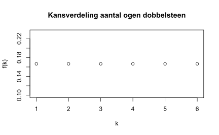
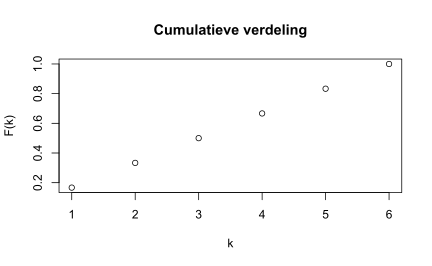
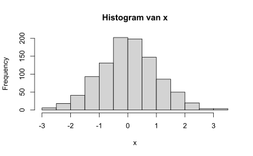
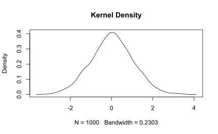
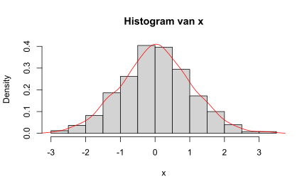
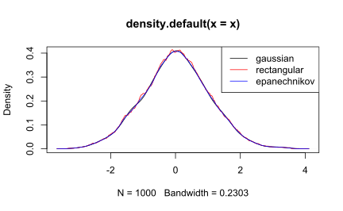
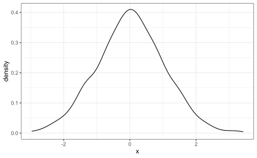
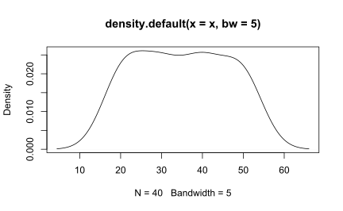
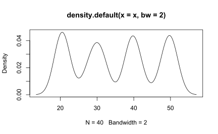

13 Kernel Density Estimation
13.1 Kansvariabelen
Een kansvariabele (stochastische variabele, toevalsvariabele) is een grootheid waarvan de waarde een getal is dat afhangt van de toevallige uitkomst van een kansexperiment. Er kunnen twee soorten kansvariabelen onderscheiden worden:
- discrete - waarbij de kansvariabele vaak wordt aangeduid met het symbool \(\underline{k}\).
- Het aantal ogen bij één worp met een dobbelsteen.
- Het aantal keren dat munt gegooid wordt bij 100 worpen met een munt.
- continue - waarbij de kansvariabele vaak wordt aangeduid met het symbool \(\underline{x}\).
- De wachttijd bij het bellen met een callcentre.
- Het gewicht van personen
Bij een kansvariabele zijn de mogelijke uitkomsten bekend, liggen vast, maar de waargenomen waarde hangt af van het toeval. Een belangrijk aspect van een kansvariabele is de bijbehorende kansverdeling, die aangeeft wat de kansen zijn op de mogelijke waarden. Een kans ligt altijd tussen 0 en 1 en de som van alle kansen is 1.
De beschrijving van de kansen op de diverse uitkomsten wordt kansfunctie (in het discrete geval) of kansdichtheid (in het continue geval) genoemd.
13.1.1 Discrete kansvariabele
Bij een discrete kansvariabele \(\underline{k}\) kan de kansfunctie \(f(k)\) beschouwd worden als een weergave van de kansen.
Definitie: \(f(k) = P(\underline{k} = k)\)
Worp met 1 dobbelsteen
Dit is een discrete versie van een uniforme verdeling.
Vaak wordt er gewerkt met de verdelingsfunctie \(F(k)\). In plaats van te rekenen met losse kansen wordt er gerekend met cumulatieve kansen, \(F(k) = P(\underline{k} \le k)\). Deze functie geeft de kans aan dat de kansvariabele \(\underline{k}\) een waarde aanneemt kleiner of gelijk aan een bepaalde grenswaarde \(k\).
\(F(k) = \sum_{j \le k}f(j)\)

13.1.2 Continue kansvariabele
Kon je bij een discrete kansvariabele de kansfunctie \(f(k)\) punt voor punt omschrijven, bij een continue kansvariabele kan dat niet omdat ieder “los” punt een kans 0 heeft. Er zijn immers een overaftelbaar mogelijke uitkomsten, waardoor de kans dat een specifieke waarde precies wordt aangenomen, gelijk is aan nul. Daarom moet bij continue kansen altijd gekeken worden naar de kans dat de variabele in een bepaald interval ligt. Bijvoorbeeld dat de kans dat gewicht van een persoon tussen de 75,6 kg en 82,1 kg ligt.
Bij een continue variabele wordt de kans op een bepaalde waarde gedefinieerd met behulp van de kansdichtheid \(f(x)\).
Stel \(\underline{x}\) is het lichaamsgewicht van een volwassen man met bijbehorende kansfunctie \(f(x)\), dan wordt in een grafiek van \(f(x)\) de kans dat het gewicht van iemand tussen de 75 kg en 82 kg is weergegeven door het oppervlak tussen deze grenzen en kan dat berekend worden door te integreren:
\(P(75 \lt \underline{x} \lt 80) = (75 \le \underline{x} \le 80) = \int_{75}^{80}f(x)dx\)
De cumulatieve verdelingsfunctie is gedefinieerd als
\(F(x) = \int_{- \infty}^{y}f(y)dy\) met \(f(y)\) als een kansdichtheid
En de kansdichtheid is dan de afgeleide van de verdelingsfunctie: \(f(x) = F^{'}(x)\)
13.2 KDE
Wanneer je een dataset van een continue variabele hebt, dan is de kansdichtheid van die variabele onbekend. Er zijn een aantal methodes om die kansdiachtheid te schatten. Een goede indruk krijg je via een histogram. De keuze van de klassebreedte is hierbij erg belangrijk. Een andere methode is de Kernel Density Estimation (KDE), een vrij complexe techniek welke goede resultaten geeft.
13.2.1 Kernel
Bij de schatting van de kansdichtheid van de variabele worden kernels gebruikt, vandaar de naam.
Een kernel is een kansdichtheidsfunctie \(f(x)\) met de volgende eigenschappen:
- \(f(x)\) is niet negatief
- \(f(x)\) heeft reeele waarden
- \(f(x)\) is even, d.w.z. f(x) = f(-x), dus symmetrisch rond Y-as
- zijn definitieve integraal moet gelijk zijn aan 1
Bekende kernels zijn de kansdichtheidsfuncties van de uniforme verdeling \(U[-1,1]\) en de standaard normale (Gauss) verdeling \(N(0,1)\). Zie verder de lijst in wikipedia.
De werking van de KDE methode komt er op neer dat wanneer je binnen de kernel verschillende punten dicht bij elkaar hebt waargenomen, de kans op die waarden groter wordt.
In wezen wordt bij elk datapunt een kernelfunctie gemaakt met het datapunt in het midden - dit zorgt ervoor dat de kernel symmetrisch is ten opzichte van het datapunt. De kansdichtheidfunctie wordt vervolgens geschat door al deze kernelfuncties op te tellen en te delen door het aantal gegevens om er zeker van te zijn dat deze voldoet aan de 2 eigenschappen van een kansdichtheidfunctie:
- Iedere mogelijke waarde van functie f(x) is niet-negatief.
- De definitieve integraal over het waardenbereik is 1. (totale kans = 1)
Dit wordt fraai uitgebeeld in https://www.youtube.com/watch?v=x5zLaWT5KPs
Intuïtief is een kansdichtheidschatting van de kernel een som van “bulten”. Aan elk datapunt wordt een “bult” toegewezen, en de grootte van de “bult” geeft de waarschijnlijkheid weer die is toegewezen aan de waarden rond dat gegevenspunt. Dus als de dataset twee waarden bevat bij x=1,5 en 1 waarde bevat bij x=1, dan is de bult bij x=1,5 twee keer zo groot als de bult bij x=0,5.
Elke “bult” is gecentreerd op het datapunt en spreidt zich symmetrisch uit om de aangrenzende waarden van het datapunt te dekken. Elke kernel heeft een bandbreedte welke de breedte van de “hobbel” bepaalt (de breedte van de omgeving van waarden waaraan waarschijnlijkheid is toegewezen). Een grotere bandbreedte resulteert in een kortere en bredere “bult” die zich verder van het midden uitspreidt en meer waarschijnlijkheid toekent aan de aangrenzende waarden.
De KDE heeft twee cruciale componenten:
- kernel - een dichtheidfunctie. Gebruikt worden normaal , uniforme , driehoekig , Epanechnikov , quartic , triweight en cosinus
- bandbreedte - vlakt de resulterende gegevens uit de dichtheidsfunctie van de kernel . De bandbreedte heeft dus grote invloed op de visuele weergave van de gegevens . Een scherpe lijn kan geleidelijk gladgestreken worden , totdat de gegevens zo zijn geparafraseerd , dat het niet langer zinvol is. In de formule voor de Kernel dichtheid schatting wordt de bandbreedte weergegeven door de letter \(h\).
13.2.2 Animatie voorbeeld
Bron: Kernel Density Estimation, Matthew Conlen
Schatting van de kerneldichtheid is een erg handig statistisch hulpmiddel, vaak afgekort tot KDE. Het is een techniek waarmee je een vloeiende curve kunt maken op basis van een set gegevens.
Dit kan handig zijn als je alleen de “vorm” van sommige gegevens wilt visualiseren, als een soort continue vervanging van het discrete histogram. Het kan ook worden gebruikt om punten te genereren die eruitzien alsof ze uit een bepaalde dataset komen - dit gedrag kan eenvoudige simulaties mogelijk maken, waarbij gesimuleerde objecten worden gemodelleerd op basis van echte gegevens.
To understand how KDE is used in practice, lets start with some points. The white circles on your screen were sampled from some unknown distribution.
As more points build up, their silhouette will roughly correspond to that distribution, however we have no way of knowing its true value.
The blue line shows an estimate of the underlying distribution, this is what KDE produces.
The KDE algorithm takes a parameter, bandwidth, that affects how “smooth” the resulting curve is. Use the control below to modify bandwidth, and notice how the estimate changes.
Bandwidth: 0.10
The KDE is calculated by weighting the distances of all the data points we’ve seen for each location on the blue line. If we’ve seen more points nearby, the estimate is higher, indicating that probability of seeing a point at that location.
Move your mouse over the graphic to see how the data points contribute to the estimation — the “brighter” a selection is, the more likely that location is. The red curve indicates how the point distances are weighted, and is called the kernel function. The points are colored according to this function.
Changing the bandwidth changes the shape of the kernel: a lower bandwidth means only points very close to the current position are given any weight, which leads to the estimate looking squiggly; a higher bandwidth means a shallow kernel where distant points can contribute.
The concept of weighting the distances of our observations from a particular point, \(x\) , can be expressed mathematically as follows:
\(\hat{f}(x) = \sum_{observations} K(\frac{x - observation}{bandwith})\)
The variable \(K\) represents the kernel function. Using different kernel functions will produce different estimates. Use the dropdown to see how changing the kernel affects the estimate.
Mogelijke functies: Epanechnikov, Normal, Uniform, Triangular, Gauss, …
Hij heeft een fraaie animatie gemaakt m.b.v. Idyll
De broncode voor zijn animatie: https://github.com/mathisonian/kde/
13.2.3 Nog een uitleg
Een kernel wordt gedefinieerd als een gladde functie K, zodanig dat \(K(x) \ge 0\), \(\int K(x) dx = 1\), \(\int x K(x) dx = 0\) en \(\sigma^{2}_{K} = \int x^2 K(x) dx > 0\)
Een voorbeeld van een Kernel is Gauss (Normaal) Kernel \(K(x) = (2\pi)^{-0,5} e^{-x^2/2}\)
Definitie: gegeven een kernel \(K\) en een positief getal \(h\), genaamd de bandbreedte, dan wordt de KDE gedefinieerd als \(\hat{f}(x) = \frac{1}{n} \sum_{i=1}^{n}\frac{1}{h}K(\frac{x - X_i}{h})\) met \(X_i\) als gegevenspunt.
De bandbreedte \(h\) controleert de hoeveelheid smoothing
13.3 Oefeningen
Test 01
Bron: Create Kernel Density Plot in R (7 Examples) | density() Function
Allereerst wordt wat voorbeelddata gemaakt, in dit geval normaal verdeelde waarden
set.seed(13531)
x <- rnorm(1000)Histogram
Eerst een histogram van de data
hist(x, main = "Histogram van x")
Basis KDE in standaard R
Met functie density() kun je kernel density schattingen maken. Je kunt bandbreedte en de te gebruiken kernel specificeren
- kernel : “gaussian” (default), “epanechnikov”, “rectangular”, “triangular”, “biweight”, “cosine”, “optcosine”
plot(density(x), main="Kernel Density")
Histogram + density()
Je kunt ook een dichtheidgrafiek over een histogram leggen.
hist(x, probability = TRUE, main = "Histogram van x")
lines(density(x), col = "red")
Vergelijking van een paar kernels
plot(density(x), col = "black")
lines(density(x, kernel = "rectangular"), col = "red")
lines(density(x, kernel = "epanechnikov"), col = "blue")
legend("topright",
legend = c("gaussian", "rectangular", "epanechnikov"),
col = c("black", "red", "blue"),
lty = 1)
ggplot
ggplot()+ geom_density(aes(x = x))
Test 02
Bron: The importance of kernel density estimation bandwidth
x <- c(21.370, 19.435, 20.363, 20.632, 20.404, 19.893, 21.511, 19.905, 22.018, 19.93,
31.304, 32.286, 28.611, 29.721, 29.866, 30.635, 29.715, 27.343, 27.559, 31.32,
39.693, 38.218, 39.828, 41.214, 41.895, 39.569, 39.742, 38.236, 40.460, 39.36,
50.455, 50.704, 51.035, 49.391, 50.504, 48.282, 49.215, 49.149, 47.585, 50.03)
plot(density(x, bw = 5))
plot(density(x, bw = 2))

Interessant artikel dat nog veel verder gaat.